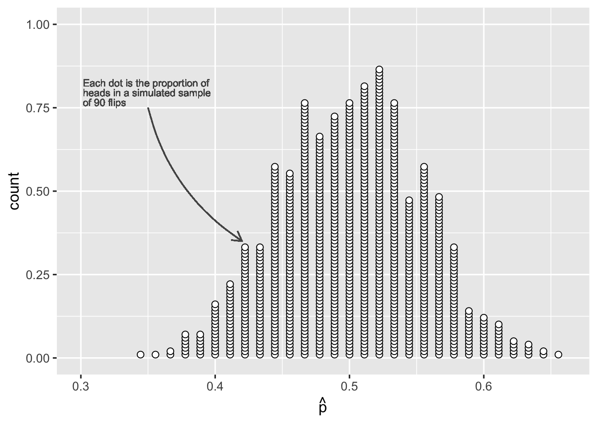
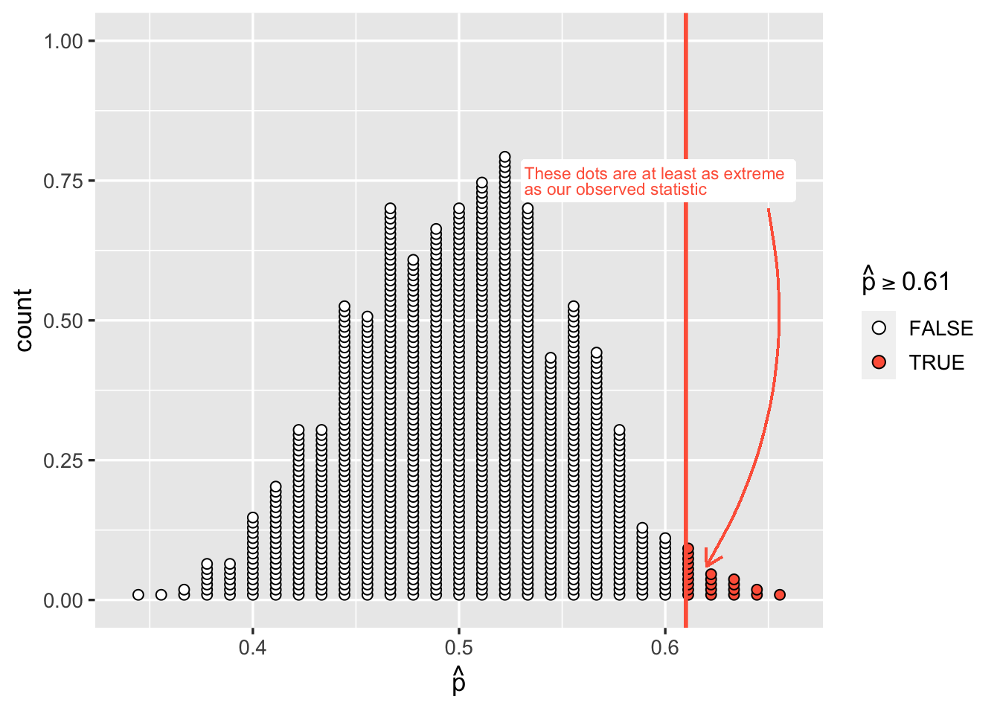
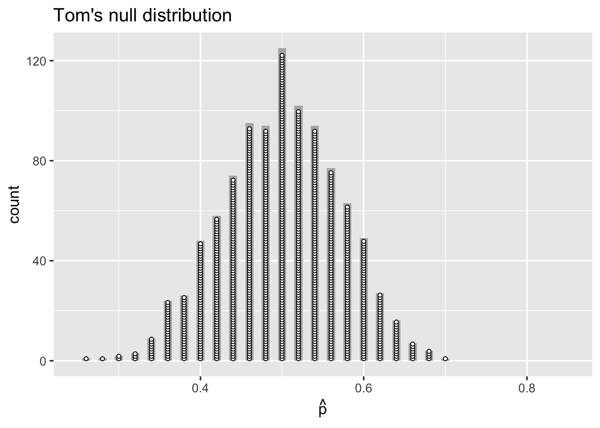
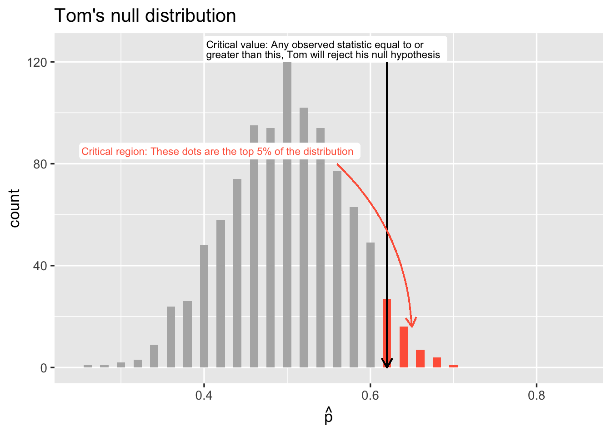
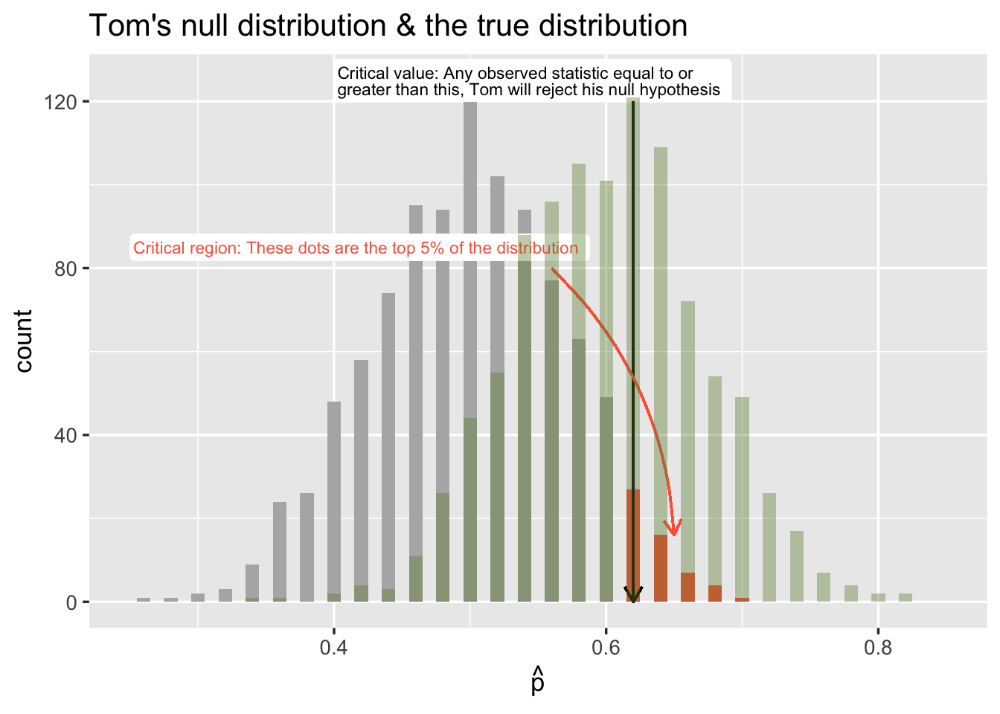

Chapter 14 Type I, Type II errors and Power
Instructions
- In this two-hour lab we will go through worked examples in the first hour, and you will attempt to answer some questions in the second hour.
- The Rmarkdown file for this week is here. It contains the code for the worked examples should you wish to follow along, and blank spaces for your answers to the questions in the second hour.
Learning outcomes
LO1. Revision of hypothesis testing
LO2. Understand Type I and Type II errors
LO3. Introduce statistical power
14.1 Overview of last week
Last week we learned to frame a research question in terms of null and alternative hypotheses about parameters.
We related the null hypothesis (\(H_0\)) to a ‘random chance model’ - i.e., if differences or effects that we observe are actually just due to sampling variation.
We generated a distribution for the null hypothesis (the null distribution) which reflected how much sample statistics would vary due to chance if the null hypothesis is true (i.e., if there really is no difference/effect). We did this by simulating lots of samples and computing the statistic on each of the samples.
We then compared the observed statistic to the null distribution we had generated. This is equivalent to asking how likely it would be to get our observed statistic if the null hypothesis was actually true. We learned that the p-value is the proportion of simulated sample statistics in our null distribution which were as or more extreme than our observed statistic.
Finally, we thought about how we might make a formal decision about whether or not to reject the null hypothesis based on our p-value. This was based on a pre-specified level (known as \(\alpha\)), below which we would consider p-values to be statistically significant.
This week, we will recap this process of hypothesis testing, before thinking about the ways in which this method might lead to error.
14.2 Walkthrough
Example 1: Coin flip
Research Question & Hypotheses
Is our coin biased?
Null hypothesis: We’re just as likely to get heads as tails when we flip the coin. We will denote by \(p\) the probability of ‘heads’.
\[H_0: p = 0.5\]
Alternative hypothesis: We’re more likely to see either heads or tails when we flip the coin.
\[H_1: p \neq 0.5\]
Data collection
We flip the coin 90 times, and it lands on heads 55 times.
\[H, T, H, H, T, T, T, H, H, H, H, T, H, H, T, T, H, T, H, H,...\]
Analysis
Steps
- Calculate the sample statistic.
- Generate the null distribution.
- Calculate the probability of seeing our statistic (or one which is farther away from the null) if the null were true (this is the p-value).
- Compare the p-value to our pre-specified \(\alpha\)-level (for this example we will use the conventional 0.05).
1. Calculate the sample statistic, \(\hat{p}\)
## [1] 0.61111112. Generate the null distribution
Remember that the null distribution is what we would expect if the null hypothesis were true - it is how much the statistics computed from samples of size \(n\) would vary if the null is true.
In our case, this quantifies how much our statistic (the proportion of heads) in a sample of size 90 would vary if the true probability of the coin landing on heads were 1/2.
# Specify our possible outcomes and their probabilities under the null
outcomes <- tibble(vals = factor(c('Heads', 'Tails')))
prob <- c(1/2, 1/2)
# Generate samples under the null
samples <- rep_sample_n(outcomes, size = 90, replace = TRUE, reps = 1000, prob = prob)
# Calculate the statistics for each sample to create the null distribution
null_distribution <- samples %>%
group_by(replicate) %>%
summarise(prop = sum(vals == 'Heads') / n())Now we can plot our null distribution:
ggplot(null_distribution, aes(x = prop)) +
geom_dotplot(binwidth = 0.01, dotsize = 0.5, fill = 'white', stackratio = 0.5) +
labs(x = expr(hat(p)))
And plot the observed statistic on top, like we did last week:
ggplot(null_distribution, aes(x = prop, fill = (prop >= 0.61))) +
geom_dotplot(binwidth = 0.01, dotsize = 0.5, stackratio = 0.5) +
scale_fill_manual(values = c('white', 'tomato1')) +
geom_vline(xintercept = 0.61, color = 'tomato1', size = 1) +
labs(x = expr(hat(p)), fill = expr(hat(p) >= 0.61))
3. Calculate our p-value
How surprising is 55 heads in 90 coin flips? We can compare it against the null distribution.
► Question
What is our p-value?
- The proportion of statistics in the null distribution which are \(\geq0.61\).
- The proportion of statistics in the null distribution which are \(\geq0.61\) or \(\leq0.39\).
- Two times the proportion of statistics in the null distribution which are \(\geq0.61\).
► Solution

► Question
At a significance level of \(\alpha = 0.05\), what is our formal decision about the hypotheses?
- Not enough evidence to reject \(H_0\).
(\(H_0:\) We’re just as likely to get heads as tails when we flip the coin.) - Evidence against \(H_0\).
► Solution
An analogy in law
Might we have made a mistake here? Is 55 out of 90 coin flips surprising enough for us to reject the hypothesis that the coin is fair?
Last week we discussed an analogy in law, in which a person on trial is presumed innocent until proven guilty. Similarly, we presume \(H_0\) to be true until there is strong evidence to reject it. How strong must the evidence be? How do we avoid wrongly convicting an innocent person? (i.e., wrongly rejecting an hypothesis which is actually true?)
Two different types of errors
| Person is innocent \(H_0\) is True |
Person is guilty \(H_0\) is False |
|
|---|---|---|
| Verdict = Innocent Test fails to reject \(H_0\) |
Correct decision | Criminal goes free Type II Error \(\beta\) |
| Verdict = Guilty Test rejects \(H_0\) |
Wrongful conviction Type I Error \(\alpha\) |
Correct decision |
Type I errors
If the null hypothesis is true, then the sampling distribution of our statistic follows the null distribution which we constructed above, and we will reject (incorrectly) any observed statistic which has a corresponding p-value of less than or equal to our \(\alpha\) level (e.g., the 0.05 we set earlier).
So the probability of making this error is equal to the \(\alpha\) level which we set.
In other words, when the null hypothesis is true, 0.05 (or 5%) of the random samples we could take would result in us rejecting it.
► Question
If there are 100 researchers, each testing a fair coin at \(\alpha = 0.05\), how many of them will incorrectly reject their null hypothesis that the coin is equally likely to land on heads or tails (\(p = 0.5\)).
► Solution
Type II Errors and Power
The other kind of error we might make is a Type II Error, and is denoted by \(\beta\).
This happens when \(H_0\) is false, but we do not have enough evidence to reject it.
In our table, the columns specify the possible states of the world (\(H_0\) is either True or False).
In each of the possible states of the world, there are two potential outcomes of conducting a statistical test (reject \(H_0\) or don’t reject \(H_0\)).
We have seen that:
- If \(H_0\) is true, then the probability of incorrectly rejecting \(H_0\) is \(\alpha\) (often set at 0.05), and the probability of correctly retaining (not rejecting) \(H_0\) is 0.95.
- If \(H_0\) is false, then the probability of incorrectly failing to reject \(H_0\) is \(\beta\), and the probability of correctly rejecting \(H_0\) is \(1-\beta\). This is known as the statistical power of our test.
| \(H_0\) is True | \(H_0\) is False | |
|---|---|---|
| Test doesn’t reject \(H_0\) | Correct \(1 - \alpha\) |
Type II Error \(\beta\) |
| Test rejects \(H_0\) | Type I Error \(\alpha\) |
Correct Power \(1 - \beta\) |
Power of a statistical test
The power of a statistical test (\(1-\beta\)) is the probability of rejecting the null hypothesis when the alternative hypothesis is true.
In other words, the power of a test is the probability that the test finds an effect if there is an effect to be found.
Example 2: A biased coin
I have a trick coin which is weighted so that it lands on heads 60% of the time (rather than the usual 50% for a normal fair coin).
Oh no! Tom has noticed that whenever we flip a coin, I always call heads, and I often seem to win. He accuses me of cheating by using a trick coin which is biased to land on heads!
I make him an offer: he can flip the coin 50 times in order to decide whether or not it really is a trick coin.
► Question
Tom’s null hypothesis is that he is just as likely to get heads as tails when he flips the coin.
\[H_0: p = 0.5\]
Where \(p\) is the probability of ‘heads’, what is his alternative hypothesis?
- \(H_1: p \neq 0.5\)
- \(H_1: p > 0.5\)
- \(H_1: p < 0.5\)
► Solution
To calculate the power of Tom’s 50 flips to detect whether or not I’m using a trick coin we need to:
- Generate the null distribution for Tom’s test.
- Calculate the critical value (the minimum number of heads in 50 flips which would lead Tom to reject his null hypothesis).
- Calculate the actual probability of seeing a statistic larger than the critical value, given that we know the true bias of the coin. This is the statistical power of Tom’s test.
1. Generate Tom’s null distribution
In Tom’s 50 coin flips, at a significance level of 0.05, what proportion of heads would lead him to the conclusion that the coin is a trick coin? The first step is to generate the null distribution:
# Specify our possible outcomes and their probabilities under the null
outcomes <- tibble(vals = factor(c('Heads', 'Tails')))
prob <- c(0.5, 0.5)
# Generate samples under the null
samples <- rep_sample_n(outcomes, size = 50, replace = TRUE, reps = 1000, prob = prob)
# Calculate the statistics for each sample to create the null distribution
null_distribution <- samples %>%
group_by(replicate) %>%
summarise(prop = sum(vals == 'Heads') / n())2. Calculating Tom’s critical value:
Now that we have generated the null distribution which Tom will use to test his observed statistic, we need to work out the values at which he will reject the null.
In other words, we need to work out where the top 5% of the null distribution is.
Note that we are only looking at the top 5% because Tom thinks the coin is biased towards heads. So his alternative hypothesis (\(H_1\)) is \(p > 0.5\), and he will reject \(H_0\) if his observed statistic falls in the top end of the distribution.
To do this, we’re going to use a new function called quantile(), which will give us the value for which a given percentage of the distribution of simulated sample statistics is to the left (e.g., smaller).
crit_val <-
null_distribution %>%
summarise(crit95 = quantile(prop, 0.95)) %>%
pull(crit95)
crit_val## 95%
## 0.62If Tom flips the coin 50 times, under the null hypothesis, he would need to get a sample statistic (\(\hat{p}\)) of greater than or equal to 0.62.
3. Calculating Tom’s power
Things we know so far:
- The coin is rigged to land on heads on 60% of flips - the true probability of heads is 0.6.
- If 62% or more of Tom’s 50 coin flips come up heads, then he will reject his null hypothesis (that the coin is fair).
What’s the probability that Tom’s 50 flips will come up with 62% or more heads using the biased coin?
In other words, what is the power of his test?
We can do this by generating the sampling distribution for when the coin is biased towards heads 60% of the time (which we know is actually true).
outcomes <- tibble(vals = factor(c('Heads', 'Tails')))
prob <- c(0.6, 0.4)
samples <- rep_sample_n(outcomes, size = 50, replace = TRUE, reps = 1000, prob = prob)
# Calculate the statistics for each sample to create the true distribution
true_distribution <- samples %>%
group_by(replicate) %>%
summarise(prop = sum(vals == 'Heads') / n())
tom_power <-
true_distribution %>%
summarise(
prob_crit = sum(prop >= crit_val) / n()
)
tom_power## # A tibble: 1 x 1
## prob_crit
## <dbl>
## 1 0.463Tom’s 50 flips has 46.3% power.
What does this mean?
It means that he has a 0.463 probability of concluding that my biased coin is biased!
It might help if we plotted the two distributions which we just generated.
We’ll start with Tom’s null distribution (proportions of heads in 1000 simulated samples of size 50, assuming the probability of heads = 0.5). It’s a histogram, with the dotplots on top just to show their equivalence.

This shows the critical value and region for Tom’s one-tailed test at \(\alpha = 0.05\). 
Finally, let’s add to that the true distribution which we generated based on our knowledge that the coin is actually biased towards landing on heads 60% of the time. Here it is (in green): 
Think about what this shows. For a coin which is biased towards landing on heads 60% of the time, more often than not, the proportion of heads in 50 flips will fall below 0.62 (which is Tom’s critical value - i.e., the minimum value which would result in him rejecting the null hypothesis).
In fact, the probability of 50 flips of the trick coin resulting in a proportion of heads large enough for Tom to reject the null is about 46.3%.
This is the proportion of the true sampling distribution (green, above) which is equal to or greater than the critical value (black vertical line).
Overlapping distributions
We’ve just seem a visualisation of two different possible sampling distributions, one reflecting the null hypothesis, and one reflecting an alternative (in this case, it reflected the true bias of the coin). It helps to think of the statistical power of a test in terms of the overlap of two such distributions.
► Question
How will our choice of \(\alpha\) influence our statistical power? (Try explaining it in terms of the two distributions we saw above)
► Solution
► Question
How will our sample size influence our statistical power? (Try explaining it in terms of the two distributions we saw above)
► Solution
► Question
How would it influence our statistical power if we assumed the coin was actually rigged to land 70% of the time on heads? (Try explaining it in terms of the two distributions we saw above)
► Solution
A nice visualisation of power can be found here: https://rpsychologist.com/d3/NHST/
Generalising it
In our example, we knew the true bias of the coin. But Tom didn’t!
What Tom could do, is calculate the power of his test assuming a given value for \(p\). He might have thought to himself:
“Hmm, that coin seems to land on heads about 3/4 of the time. If that is true, I want to know what the probability of me being able to correctly reject the null hypothesis is when I flip the coin 50 times”.
Had Tom used the R code above he might have called his distribution hypothesised_distribution rather than true_distribution!
- When we conduct NHST (Null Hypothesis Significance Testing), we set \(\alpha\).
- In setting \(\alpha\), we define a critical region under the null distribution. The critical value is the value of the statistic which defines the start of this region. Any statistic more extreme than this will result in rejecting the null hypothesis.
- If the null hypothesis is false, the probability that we reject the null hypothesis depends on a) our \(\alpha\) level, b) how far away from the null distribution the assumed state of the world is, and c) our sample size.
- This means that, for an assumed effect size (i.e., difference from the null hypothesis) - or set of effect sizes - we can compute the power of a test for a given sample size.
We can then do useful things such as reframe this to find out what the minimum sample size is that would be required to achieve a given level of power to detect a given effect size.
14.3 Summary
Today, we have recapped what we learned last week about hypothesis testing, and introduced some key ideas.
We learned that when we reject a true null hypothesis because we happen (by random chance) to have a sample statistic which is unlikely under the null, we commit a Type I Error. We saw how the probability of this happening is equal to our \(\alpha\) level.
We also learned that failing to reject the null hypothesis when it is actually false, is known as a Type II Error, and the probability of this depends on how far away from the null parameter the true parameter is (i.e., effect size), as well as how big our sample is.
We simulated different distributions under different hypotheses, using the code below:
# Our possible outcomes
outcomes <- tibble(vals = factor(c('Heads', 'Tails')))
# Our probabilities (reflecting the hypothesis)
prob <- c(0.5, 0.5)
# Our simulated samples of size 50
samples <- rep_sample_n(outcomes, size = 50, replace = TRUE, reps = 1000, prob = prob)
# Our distribution
distribution <- samples %>%
group_by(replicate) %>%
summarise(prop = sum(vals == 'Heads') / n())We calculated the critical value (for a one-sided test) for a null distribution by using the quantile() function, to find the values at which 95% of the distribution of simulated sample statistics are to the left.
For a two-sided test at \(\alpha = 0.05\), we can simply extend this to ask for the values where 2.5% of the distribution is to the left, and where 97.5% of the distribution is to the left (so 2.5% is to the right). In doing so, we divide our critical region in to the two tails of the distribution.
## # A tibble: 1 x 2
## crit025 crit975
## <dbl> <dbl>
## 1 0.36 0.64We can find the proportion of a different theorised distribution which fell beyond a critical value, giving our power:
14.4 Lab
14.4.1 Exercise 1: Rock Paper Scissors!
If you haven’t ever played Rock, Paper, Scissors before, then play it now against someone nearby!
A paper in 2009 found that novice players tend to avoid choosing scissors. We are going to test this.
Research Question
Are novice players of Rock, Paper, Scissors biased to choosing scissors less often?
► Question 1
Write out your null and alternative hypotheses. Is our alternative hypothesis one-sided or two-sided?
► Solution
► Question 2
Assuming that novice players actually choose Scissors only 1/5 of the time (\(p = 1/5\)), calculate the power to detect this if we conduct a test (at \(\alpha = 0.05\)) based on 75 games of Rock, Paper, Scissors with novice players.
► Solution
► Question 3
Calculate the power if we were to conduct the same test at \(\alpha = 0.01\) instead.
► Solution
14.4.2 Exercise 2: Calculating power for a different coin.
► Question 4
If my trick coin was actually weighted so that it landed on heads 65% of the time, what would the power of Tom’s test (50 flips) be?
► Solution
14.5 Extra Exercises
14.5.1 Exercise 3: Sample size (number of flips) and power
► Question 5
Assuming the coin to be biased towards landing on heads 60% of the time, calculate the power of Tom’s statistical test for when he flips the coin 75 times, 100 times, and 200 times. Which sample size should Tom use if he wants at least 80% power?
► Solution
► Question 6
List the three things which affect the power of a statistical test.
► Solution
A thought experiment
- There are 20 researchers.
- Each researcher has a perfectly balanced/fair coin.
- Each researcher conducts a statistical test at \(\alpha = 0.05\) to evaluate whether their coin is fair (lands on heads equally as often as it lands on tails).
How many of the researchers’ tests would we expect to result in a Type I Error?
Remember: The probability of making a Type I error is the probability of getting an unlikely sample statistic simply due to chance sampling variation (i.e., we just happen to get a random sample with an unlikely statistic).
► Solution
14.6 Glossary
- Type I Error. Rejecting the null hypothesis when it is actually true (false positive). Its probability is denoted by \(\alpha\).
- Type II Error. Failing to reject a null hypothesis that is actually false (false negative). Its probability is denoted by \(\beta\).
- Power (\(1 - \beta\)). The probability of (correctly) rejecting the null hypothesis when it is false.
- Critical Region. The area of the null distribution in which an observed sample statistic would lead to rejecting the null hypothesis. The area of the critical region corresponds to \(\alpha\)% of the null distribution.
- Critical value. The value of the statistic which defines the start of the critical region. Any statistic more extreme than this will result in rejecting the null hypothesis.
- Effect size. The distance from the value of the parameter under the null hypothesis. When we calculate power, we often do so for an assumed effect size. When we take a sample and calculate an observed statistic, the distance from that observed statistic to the parameter under the null is our observed effect size.
14.7 References
- Eyler, D., Shalla, Z., Doumaux, A., & McDevitt, T. (2009). Winning at Rock-Paper-Scissors. The College Mathematics Journal, 40(2), 125-128.
- Tintle, N., Chance, B. L., Cobb, G. W., Rossman, A. J., Roy, S., Swanson, T., & VanderStoep, J. (2015). Introduction to statistical investigations. New York: Wiley.